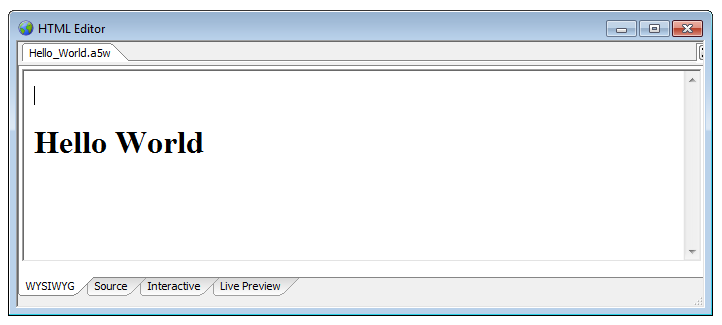
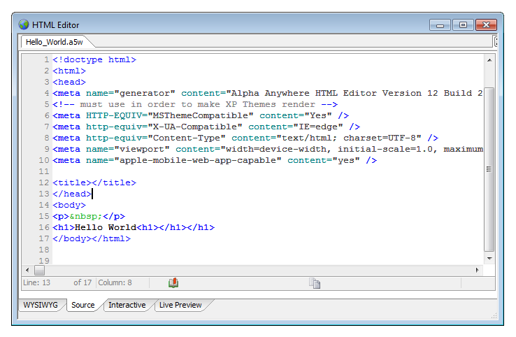

Starting the HTML Editor
You can prepare HTML
pages with any ASCII editor. You simply need access to the
underlying HTML code. However, most developers will find the
embedded HTML Editor a very convenient tool. It has a WYSIWYG
(What you see is what you get) of the page, source code views of the page, and a rich set of editing
tools. However, the most useful feature of the editor is the
ability to view the page in your default browser with a single
key click. There are many ways to access the HTML editor in
Alpha Anywhere. For example, there are links to it within the
Grid Builder that let you shape the HTML used by different
elements inside a grid. Below are two quick ways of accessing
the HTML Editor.
|


Start the HTML Editor in Alpha Anywhere:
1. Select
View > HTML Editor.
HTML Editor from the Web Projects Control Panel :
Click
A5W Pages or HTML Pages in the left pane, so you can see your pages.
Double click an
HTML or A5W file in the resulting list.
Optionally, open an existing HTML or
A5W page in the Web Projects Control Panel and click the
Edit button
in the Web Projects Control Panel toolbar.
The HTML editor also comes equipped with a
Bookmark Tool
at
the bottom of the Screen. This feature lets you add new
bookmarks to your html as well as the Bookmark Tool. By clicking
on the bookmarks skip to wherever they happen to appear in your
html page.
The Interactive Window tab lets you type in
commands and get back results. This window also accepts shell commands
that were once only used through a
command line window. However, the Interactive window in Alpha
Anywhere now lets you access them directly. For example, if you
type a $ sign into the Interactive window you will be presented
with a list of all of the shell commands that Alpha Anywhere
recognizes. In addition to this. the Interactive window also
recognizes curl commands. For more on this topic see the 'Using
Shell Commands from the Interactive Window' page.
Live Preview lets you
see how your HTML appears on the default server connected to
Alpha Anywhere. If you do not see anything in Live Preview and
have an additional program running you might receive an error
message stating that the development server can not open or is
already in use. If you encounter this problem one way around it
is to change the port being used by the server. To do this
go to the Web Projects Control Panel
and click the Web button at
the top of the screen. Choose the
Development Server option with the globe icon next to it.
This will load the Development Server
Settings page. Under the tab marked
General there is a Server Port
Control. Change the number here and you should be good to go.
Once you publish your html page you should also be able to open
it in other browsers as well. This is provided that you have set
your security settings for that page to 'always allow';
otherwise the browser will not be able to see the page.
|